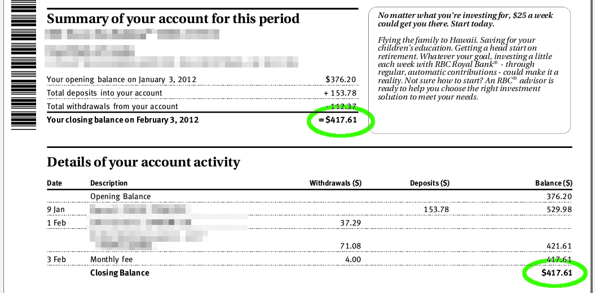

非官方中文译文 · 术语保留英文；代码、account、option、币种原样。 原文：https://beancount.github.io/docs/balance_assertions_in_beancount/
Beancount 中的 Balance Assertions
Martin Blais，2014 年 7 月
http://furius.ca/beancount/doc/proposal-balance
本文档总结了所有命令行记账系统中 balance assertion 的不同语义类型，并为 Beancount 中的总额和文件顺序 running assertion 提出了新的语法。
动机
Beancount 和 Ledger 都实现了 balance assertion。它们为系统提供了检查点，可用于验证数据录入的完整性1。
传统会计原则规定，用户永远不能更改过去——更正过去的错误需要通过插入新条目来撤销先前的错误2——但我们命令行会计社区对此持异议：我们希望保留重建过去的能力，更重要的是，能够在原始数据录入处更正过去的错误。是的，我们是业余爱好者，但我们决心通过挑战现有概念来简化记账流程，并认为只要不破坏已知的 balance，这种做法是完全合理的。这些已知的 balance 正是我们通过 balance assertion 提供的。
从另一个角度来看，这些 balance assertion 仅仅是各种账户报表上报告的最终金额，如下图所示。
根据此讨论串，我们确认在 Ledger (3.0) 和 Beancount (2.0b) 的当前版本中，对 balance assertion 存在不同的解释。

部分断言与完整断言
Beancount 中的 balance assertion 目前看起来像这样：
2012-02-04 balance Assets:CA:Bank:Checking 417.61 CAD
该 directive 的含义是：“请断言 account ‘Assets:CA:Bank:Checking’ 在 2012 年 2 月 3 日结束时恰好包含 417.61 单位的 CAD”（因此日期标记为 4 日，因为在 Beancount 中 balance assertion 是在日期的开始处指定的）。它并未提及该 account 库存中的其他商品。例如，如果该 account 包含“USD”单位，则这些单位不会被检查。我们将这种解释称为部分 balance assertion或单一商品断言。
另一种断言是详尽的：“请断言 account ‘Assets:CA:Bank:Checking’ 在 2012 年 2 月 3 日结束时仅包含 417.61 单位的 CAD。”我们称之为完整 balance assertion。为了使这种第二种类型的断言生效，它必须支持指定库存的完整内容。目前尚不支持此功能。
此外请注意，我们并未断言库存的 cost basis，仅断言单位数量。
文件断言与日期断言
对于断言中的运行余额，存在两种不同的解释和实现方式：
-
Beancount 首先对所有 directive 进行排序，并在该 directive 日期的开始时刻验证余额。在之前的示例中，这意味着“在 2012-02-04 的任何 transaction 应用之前的余额”。我们将这种称为 date assertions 或 date-based assertions。
-
Ledger 在解析阶段维护每个 account 库存的运行余额，并在文件中断言所在的位置执行检查。我们将这种称为 file assertions 或 file-order，或 file-based assertions。这种断言没有关联的日期（这在 Ledger 中略显误导，因为断言的指定方式使其看起来像是附加在 transaction 的 posting 上，从而暗示它们发生在 transaction 日期，但实际上并非如此，它们严格地应用于文件位置）。
顺序与歧义
这两种断言类型之间的一个重要区别在于，file-based assertions 不是顺序无关的。例如，考虑以下输入文件：
;; Credit card account
2014/05/01 opening
Liabilities:CreditCard $-1000.00
Expenses:Opening-Balances
2014/05/12 dinner
Liabilities:CreditCard $-74.20
Expenses:Restaurant
;; Checking account
2014/06/05 salary
Assets:Checking $4082.87
Income:Salary
2014/06/05 cc payment
Assets:Checking $-1074.20 = $3008.67
Liabilities:CreditCard = $0
如果你将信用卡付款移动到信用卡账户部分，同一组 transaction 将会失败：
;; Credit card account
2014/05/01 opening
Liabilities:CreditCard $-1000.00
Expenses:Opening-Balances
2014/05/12 dinner
Liabilities:CreditCard $-74.20
Expenses:Restaurant
2014/06/05 cc payment
Assets:Checking $-1074.20 = $3008.67
Liabilities:CreditCard = $0
;; Checking account
2014/06/05 salary
Assets:Checking $4082.87
Income:Salary
这个微妙的问题可能让初学者难以理解。将 file assertion 移动到其自身无日期的 directive 中，可能是更能体现其语义的语法，看起来可能像这样：
balance Assets:Checking = $3008.67
缺少日期表明该检查不是在特定时间点应用的。
日内断言
另一方面，date-based assertions 由于其顺序无关性，排除了日内断言，即在同一 account 的同一天的两个 posting 之间发生的 balance assertion。
Beancount 目前不支持日内断言。
尽管存在这一不足，但这并没有造成太大问题，因为通常可以通过添加或减少一天来调整必要的日期，或者在不可能时直接跳过断言（跳过断言不是大问题，因为它们是可选的，其目的仅仅是提供确定性。只要有一个出现在被跳过断言之后的日期的断言，这就不是大问题）。
然而，为 date-based assertions 找到日内断言的解决方案将是很好的。一个有趣的想法是扩展语义，在平衡检查之前和之后直接发生的所有 transaction 集合中，按照文件顺序应用余额，这些 transaction 必须与平衡检查发生在同一日期。例如，这将平衡：
2013-05-05 balance Assets:Checking 100 USD
2013-05-20 * "Interest payment"
Assets:Checking 12.01 USD
Income:Interest
2013-05-20 balance Assets:Checking 112.01 USD
2013-05-20 * "Check deposit"
Assets:Checking 731.73 USD
Assets:Receivable
一旦某个 directive 出现在不同的日期，这种“魔法”就会失效。
另一个想法是始终将 balance assertions 按文件顺序作为第二个排序键（在日期之后）进行排序，并据此应用它们。不过我不确定这是否容易理解。
日初与日末
最后，为了完整性，值得一提的是，date assertions 必须具有关于它们在一天中何时应用的明确定义的语义。在 Beancount 中，它们目前应用于日初。
提供一种在日末应用的 date-based assertions 的替代版本可能很有价值，例如 “balance_end”。Beancount v1 曾经有过这个（“check_end”），但在 v2 重写中被移除了，因为不清楚它是否真的需要。balance assertions 具有单一含义的简洁性也是很好的。
状态
Ledger 3.0 目前仅支持针对 transaction 的部分文件顺序 balance assertion。
Beancount 2.0 目前仅支持在一天开始时的部分基于日期的 balance assertion。
提案
我提议对 Beancount 的 balance assertion 进行以下改进。
文件断言
文件断言应通过插件提供。其形式如下：
2012-02-03 file_balance Assets:CA:Bank:Checking 417.61 CAD
理想情况下，为了明确它们严格遵循文件顺序，它们不应包含日期，形式如下：
file_balance Assets:CA:Bank:Checking 417.61 CAD
但这破坏了所有其他 directive 语法的规律性。它还会使原本非常规律且简单的解析器变得更加复杂……所有其他 directive 都以日期和一个单词开头，而其他所有行基本上都被忽略。这将是一种偏离。最后，保留一个日期仍然很有用，以便将这些 directive 插入到渲染后的日志中的某个位置。因此，我正在考虑为其保留日期。如果你决定使用这些特殊的断言，你应该知道它们的含义。
我也不喜欢将断言附加到 transaction 上的想法；transaction 语法已经足够复杂，它应该保持简单。这应该是一个很少有人使用的独立 directive。
为了实现这一点，插件只需根据文件位置（使用条目的 fileloc 属性）对所有 directive 进行重新排序，忽略日期，并在应用检查时从上到下重新计算 running balances。这可以完全通过后处理来完成，就像基于日期的断言一样，而不会干扰任何其他处理。
此外，在插件中实现此功能的另一个优势是，不使用该 directive 的人无需承担计算这些库存的成本。
完整断言
完整断言应通过当前的 balance assertion directive 在 Beancount 中得到支持。它们并不非常重要，但可能有用。
可能的语法想法：
2012-02-03 balance* Assets:CA:Bank:Checking 417.61 CAD, 162 USD
2012-02-03 balance Assets:CA:Bank:Checking = 417.61 CAD, 162 USD
2012-02-03 balance full Assets:CA:Bank:Checking 417.61 CAD, 162 USD
2012-02-03 balance
Assets:CA:Bank:Checking 417.61 CAD
Assets:CA:Bank:Checking 162 USD
我仍未决定哪种最好。目前看来这似乎是一个口味问题。
用户评论
Red S - 2015 年 12 月 16 日
多商品的部分断言可能也很有用。例如，"
Martin Blais - 2015 年 12 月 17 日
两点评论：
- 单个数字 + 商品列表的语法与当前语法中的其他任何内容都不同。包含它感觉有点格格不入且不一致。
- 我认为这可以用多行轻松复现。
我需要对此进行更多思考，以彻底理清这个问题。
谢谢，
Red S - 2015 年 12 月 17 日
确实，理论上可以用多行复现，但正如我昨天在导入一个旧账户时发现的，即使只有大约 15 种商品，这也很快就会变得繁琐。
关于语法也是真的，尽管接受商品列表的 open directive 的语法很接近。
Martin Blais - 2015 年 12 月 17 日
确实，我之前没考虑到那一点。
关于在文件中保留 balance assertion 的日期：
Anonymous - 2014 年 7 月 13 日
我对此持异议：具体语法对于我们要使用/设计的工具类型来说太重要了，不能具有误导性。如果必须有一个日期，它应该被使用且有意义。如果我们试图表达的内容在语义层面上不需要日期，那么其具体语法就不应该包含日期。
如果要求日期的唯一原因是其他所有 directive 都有日期，那么我们应该推广我们对 directive 概念的理解，从“以日期开始的东西”变为“具有可选起始日期的东西”。
— Zack
Martin Blais - 2014 年 7 月 13 日
观点已收到。仍然不确定。我愿意在这里做出例外的原因是，那将是唯一一种不需要日期的 directive。另一方面，如果我在解析时处理这些 directive——由于 interpolation 即将发生的变更，我无法这样做——没有日期就清楚地表明它不是一个 directive，而是一个特殊的解析器命令，如 option 和 pushtag/poptag。
Martin Blais - 2014 年 7 月 13 日
支持为文件断言添加日期的另一个原因是，它们随后可以显示在条目日志中。您可能没有使用过 Beancount 并注意到我在日志中渲染 balance 条目。如果文件断言没有日期，我就没有地方放置它们。我想我可以使用前一个在文件顺序中对该账户有 posting 的 transaction 的日期，但这对我来说似乎相当隐晦。或者我可以决定根本不渲染它们。
版权与许可：原文 © Martin Blais / beancount/docs contributors，MIT License。中文翻译为非官方 derivative work，仅供个人学习；详见 NOTICE.md。